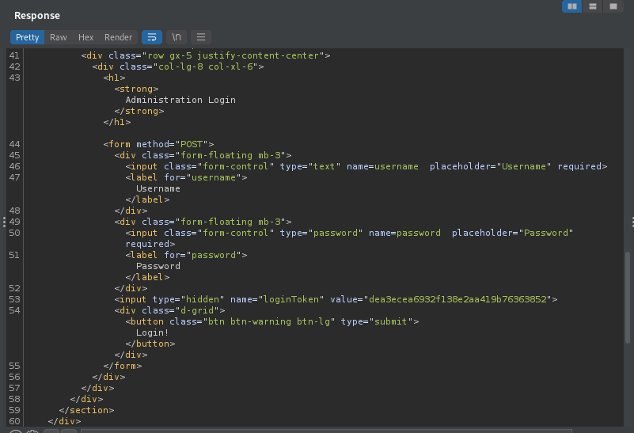
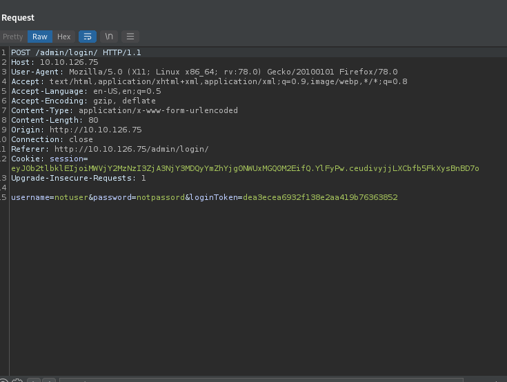
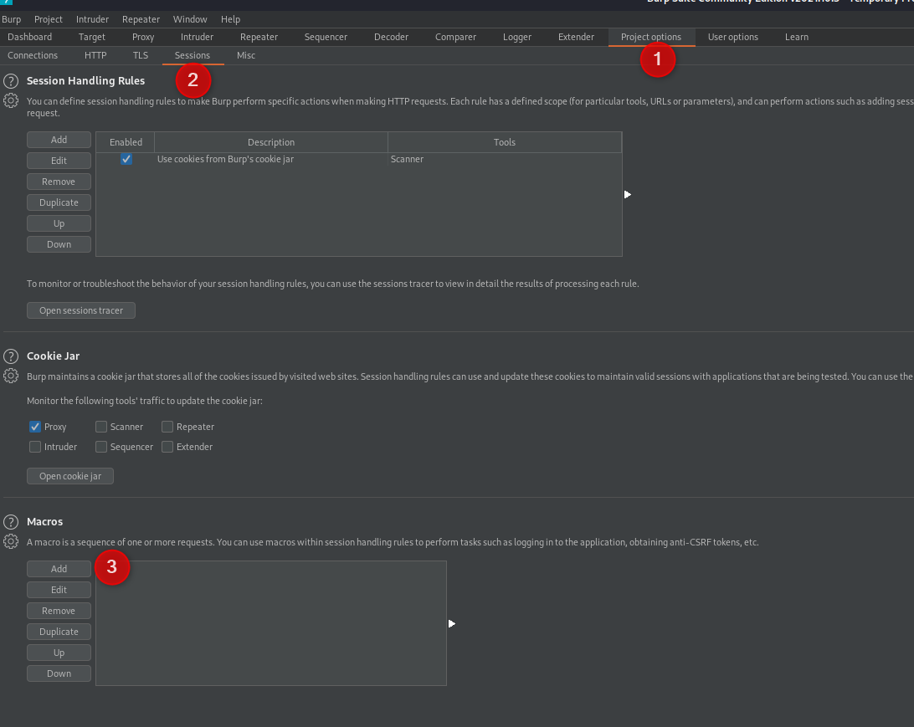
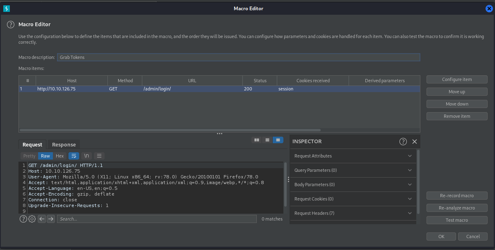
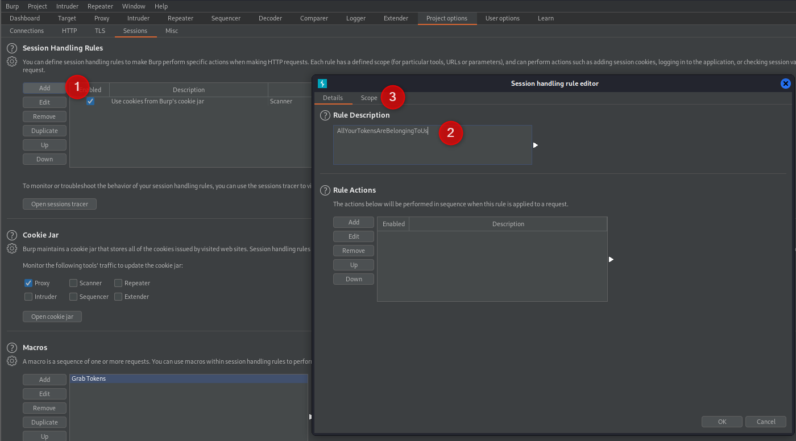
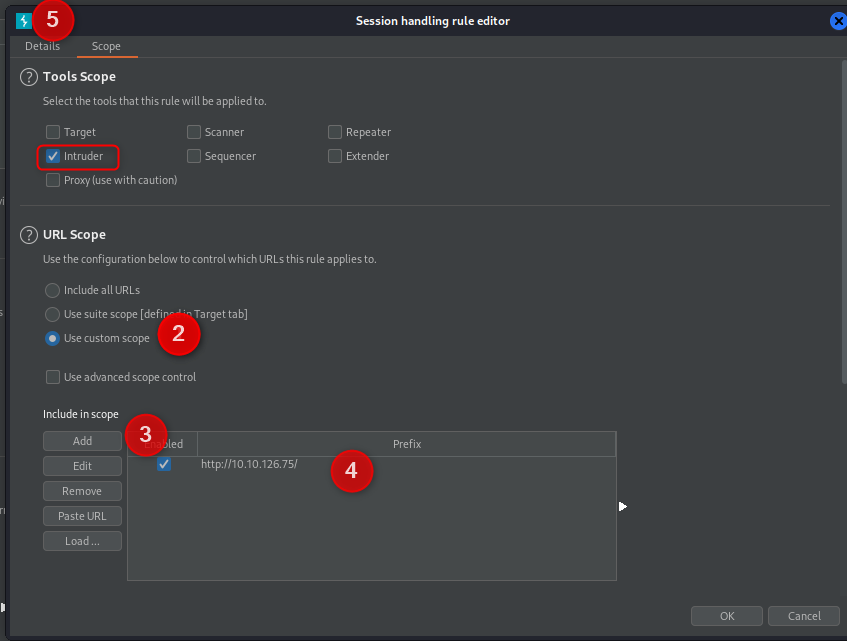
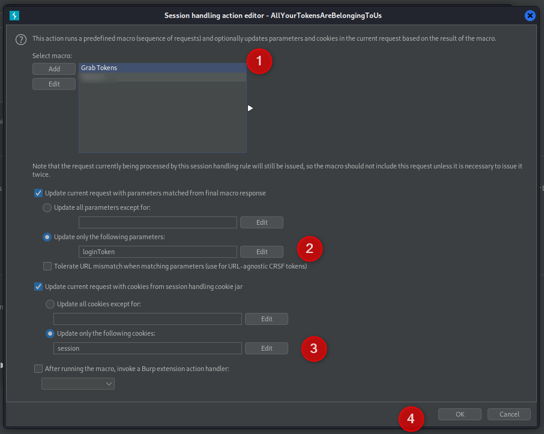
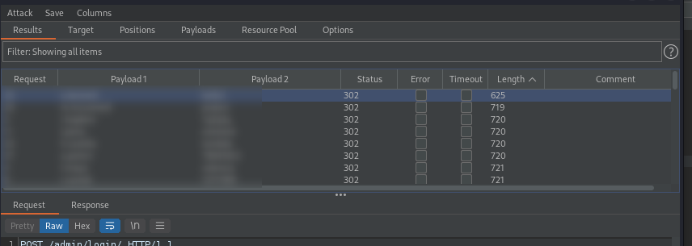
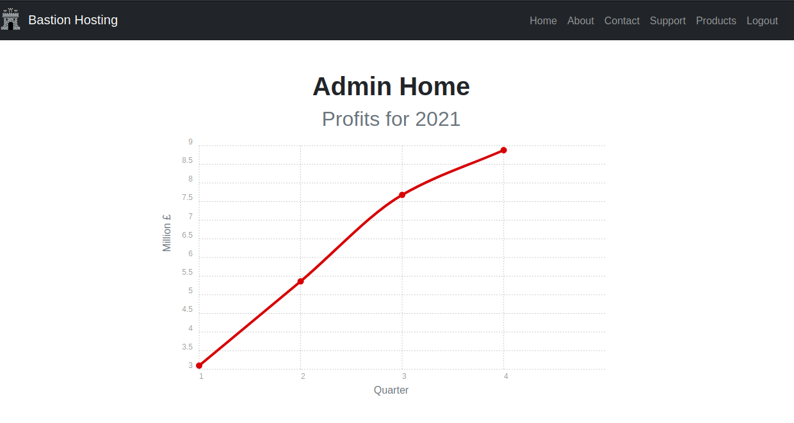

Burp Suite - Intruder#
Another feature of BurpSuite is the “Intruder”. The Intruder tool is basically a brute forcing tool specific to web sites. If youre on the free eddition of Burp however, this is rate limited so you’ll probably be using other tools. Once you have a request to attack with you must define positions, the mode, and the payload(s).
Positions#
So, you’ve found a request you would like to brute force, and sent it to Intruder. The first thing you will come across is ‘positions’. These are the points you will attack with your modes. Burp suite attempts to guess what you want to attack, but gets it wrong most of the time. You can add and remove positions to prepare for the mode. Be warned, while you can define 20 positions, you probably wont be setting that many, and depending on your mode this could end with a very large attack.
Modes#
There are 4 modes to Intruder, each has its own usage so you should know the right one for each attack.
Sniper
Battering Ram
Pitchfork
Cluster Bomb
Sniper#
The Sniper is a simple attack but it is very versatile. It takes one position at a time (ignoring the others) and itterates through your one payload.
With this mode, your number of requests sent is positions x payload size.
A few examples of usage for this mode
Brute forcing a login for a single user (single position)
Testing for SQL injections (multiple positions)
Battering Ram#
The Battering Ram is similar to Sniper, except that it sends the same payload to ALL positions at the same time.
With this mode the number of requests sent is your payload size.
A few examples of usage for this mode
Testing for SQL injections
Brute forcing a login where user=password
Pitchfork#
The Pitchfork is a specific case that is very useful for this one scenario. You must define multiple positions (likely user an password) and the same number of payloads in the right order. For each request sent, Intruder grabs the next line in each payload and sends these together. For example, you have a list of users and their passwords from another attack (say a data leak). You then create 2 list, one for each position but keep them in the same order. Pitchfork will then test each account. If the payloads arent the same size, Intruder will terminate at the shortest payload.
With this mode, the number of requests sent is equal to the payload (min) length.
Cluster Bomb#
The Cluster Bomb is the definition of brute forcing (and is very messy TBH). With multiple payloads, each combination of payloads is tried. For example, if you have 2 payloads, users and passwords, it will try all combinations of user/password. Naturally, this is going to take a while…
With this mode, the number of requests is the product of all your payload lengths. (User length * password length in the above example.)
Macros#
Macros are a way to automate some tasks, or allow other automated tasks to proceed. The example used here is directly from the “extra mile” task in TryHackMe’s Burp Suite Intruder room. In this example, we are trying to automate a password bruteforce, but the POST request also looks for a token given in your GET request for the site. This changes on each attempt so cannot be reused for multiple attempts.
In the GET request, the token can be found hidden in the form.

This is then given in the POST when a login is attempted.

The session cookie is the same, it changes each attempt.
So, if we do things how we have been before, even if the user/password are correct, we’re not getting through. So how do we grab a new session token for each attempt? By running a new GET of course! How do we do this?
Create a Macro to grab the tokens by running a new GET
Set up Session Handling to use the Macro
???
Profit
Create a Macro to grab the tokens#
Our first step is to automate grabbing the tokens. Make sure you have a get request in your history before running this.
Jump to the “Project Options” tab, select “Sessions” and select to “Add” a new Macro.
Select your GET request to the login Page, click OK
Give the Macro a name and clicek “OK” to finish

Set up Session Handling#
We’ve got the macro to GET the page, now we need to use it.
In the “Sessions” tab, click to “Add” a new “Session Handling Rule”. Name it and swap to the “Scope” tab
Now we need to set the scope of our macro. Technically we are just using intruder today so could be generic with this, but its good to know the full process. Set your scope to intruder only, Set a custom scope (or your defined target if you’ve added one), then add the values for the custom sccope (if youare using custom). Jump back to the “Details” tab.
Click to “Add” a Rule action and select “Run a macro”
Select the Macro to run (dont click add). Update only the paramater “loginToken” and Update only the session cookie. These are the two values we need to pull from the ‘new’ get request. Click OK then OK again to complete the Macro.

???#
Something something
Profit#
Now we can run the intruder attack. You’ll find one account that has a shorter length. 
Note: I had to run this a second time (close and exit burp and recreate everything) as the server looks to be playing up. The same settings the second time got me through.
